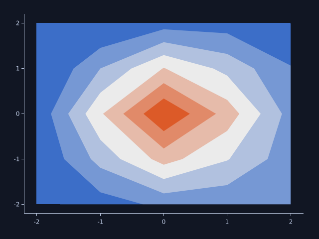

The same seven thresholds produce eight bands and Moxi covers the complete source grid. Moxi clips fixed-diagonal triangles; upstream fills marching-squares above-level regions. Band topology/area equality against upstream is unverified; native seams, palette, padding and labels differ.

Offscreen Canvas outputs and local browser replay, 640×480 charts. Moxi uses its explicit data extent; upstream adds 5% axis padding with supplied coordinates. No native input, physical input, GPU, accessibility usability, independent scientific review or performance acceptance is claimed.
Upstream 377b519e07f017d4a120b7fc3551f972a0b3fe16; Moxi fcc05cc41598137dff8a5e3f04db4e325729e759 with recorded uncommitted source fingerprint 9864d9640ee0af05e78559fb07afc6340b4e026efab6d2bb7d730da569f9fc13.